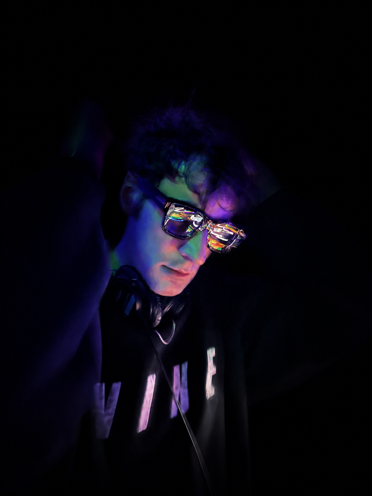

About
Chelsea-based DJ and producer Max de Luz creates musical journeys that bring atmosphere, energy and flow to an evening. For Max, a great set is more than a collection of songs. It has direction, evolving naturally throughout the event, responding to the audience and shaping an experience that feels seamless, considered and perfectly suited to the occasion.
Over the years, he has become an established presence on the Chelsea and West London events scene. As a resident DJ at one of the area's longstanding venues, he has built a reputation for distinctive selections that balance the familiar with the unexpected, creating evenings that are exciting, engaging and memorable.
With a musical background that includes Berklee College of Music, Max brings an international perspective to every performance. From summer seasons in Punta del Este and appearances in Ibiza to intimate celebrations and members' clubs in London, his approach remains consistent: thoughtful and finely attuned to the mood in the room.
Alongside his work as a DJ and producer, Max's experience in live sound engineering gives him a deeper understanding of the technical and logistical details behind a successful event. He sees his role as curating the experience from start to finish.
